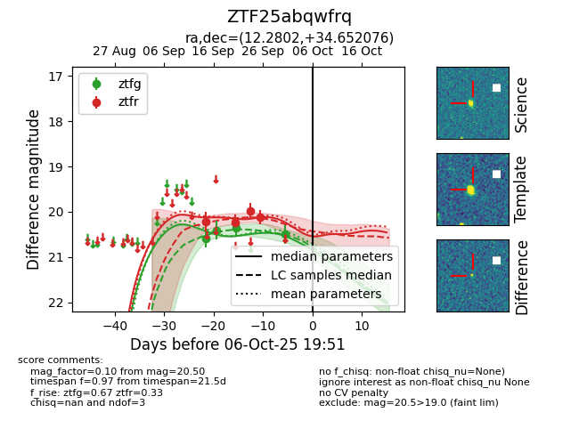
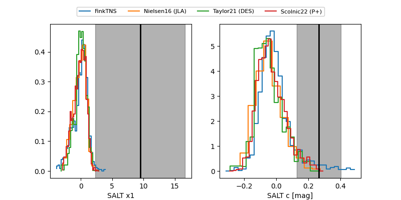

FINK: ZTF25abqwfrq
Lasair: ZTF25abqwfrq
ALeRCE: ZTF25abqwfrq
ZTF25abqwfrq (ztf,fink)
equatorial (ra, dec) = (12.2802,+34.65208)
galactic (l, b) = (122.3912,-28.21724)


last ztfg=20.50, ztfr=20.11
4 ztfg, 4 ztfr detections